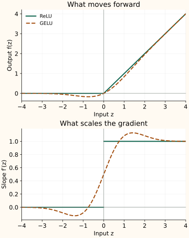

GELU: Weight the Input with a Gaussian CDF
ReLU uses a hard rule: keep a positive input and discard a negative one. GELU replaces that switch with a smooth weight. Understanding that weight makes the formula much less mysterious.
What does the Gaussian CDF mean here?
Let $Z$ be a standard normal random variable, with mean zero and variance one. Its cumulative distribution function is $\Phi(z)=P(Z\leq z)$: the area under the normal curve to the left of $z$.
The CDF increases smoothly from zero to one and equals $1/2$ at zero. GELU multiplies the input by this weight:
The Gaussian reference defines a deterministic function. Applying GELU does not sample a random mask or require the actual activations to follow a normal distribution. The definition comes from Hendrycks and Gimpel.
Read the multiplication before the curve
At $z=1$, $\Phi(1)\approx0.8413$, so the output is about 0.8413. At $z=-1$, the weight is about 0.1587, so the output is about −0.1587. A small positive weight multiplying a negative input still gives a negative output.
| Function | −1 | 0 | 1 |
|---|---|---|---|
| ReLU | 0.0000 | 0.0000 | 1.0000 |
| GELU | -0.1587 | 0.0000 | 0.8413 |
Far to the right, the weight approaches one and GELU approaches the identity. Far to the left, the weight approaches zero quickly enough that the output returns toward zero from below. The negative dip makes GELU non-monotonic.
Differentiate both parts of the product
Write the standard normal density as $\phi(z)$. It is the derivative of the CDF:
The product rule differentiates the input and then the weight:
The first term keeps the original weight; the second accounts for how that weight changes with the input. The slope is $1/2$ at zero. It can be negative on part of the negative side and slightly greater than one on the positive side. A weight between zero and one does not constrain the slope to that range.


Exact GELU and the tanh approximation
The exact CDF can be expressed using the error function:
A common approximation first forms $u(z)$ and then uses tanh:
They are close but not identical. If you use the approximation, its backward pass must differentiate that approximation. Record the choice when comparing checkpoints or implementations; the Keras GELU API exposes it explicitly.
Advantages and disadvantages
| Advantages | Disadvantages |
|---|---|
| Smooth output and derivative, a small negative response instead of ReLU's hard cutoff, and a positive tail that approaches the identity. | Negative-tail gradients can still become tiny; the function is not monotonic and its slope can be negative or exceed one. It needs a CDF or approximation, and the implementation choice must match the backward pass and checkpoint. |
These are shape properties, not proof that GELU trains better than ReLU or SiLU in every model. Its output is a hidden feature, not a class probability.
Where this fits
GELU is a useful hidden-layer candidate when a smooth transformation with a small negative region fits the architecture. It does not produce class probabilities. Start from the activation expected by a pretrained model; replacing it changes the learned computation and needs evaluation.
SiLU and Swish follow the same input-times-weight idea using sigmoid instead of the Gaussian CDF.